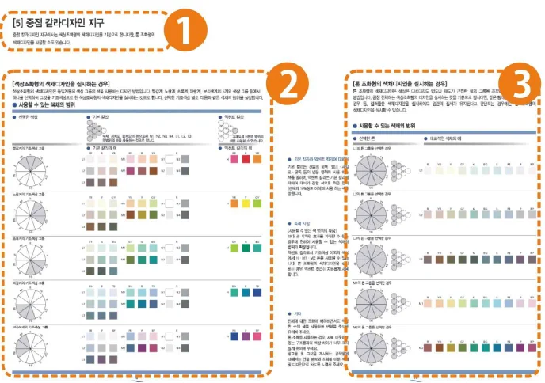
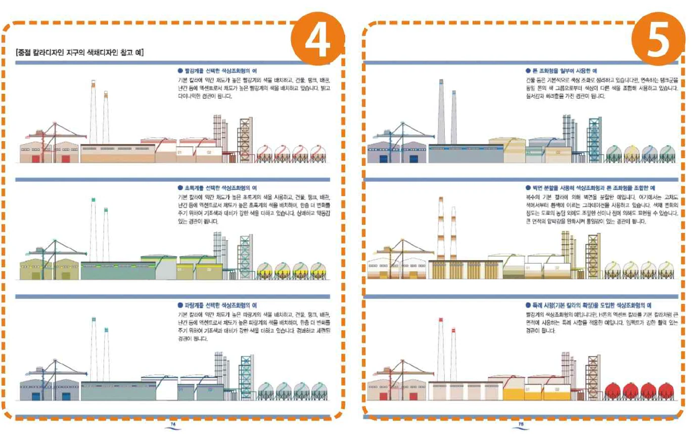
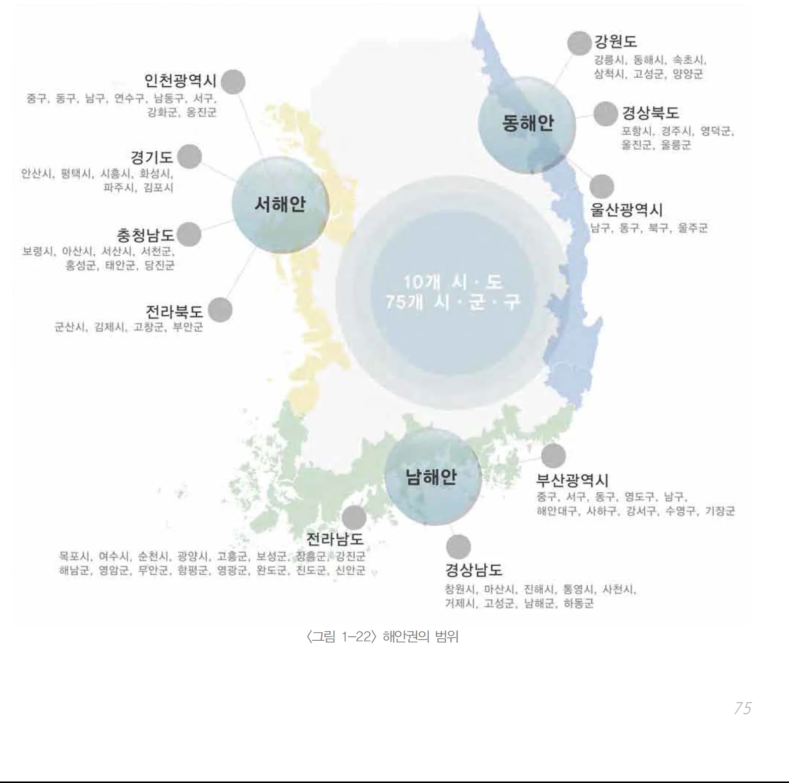
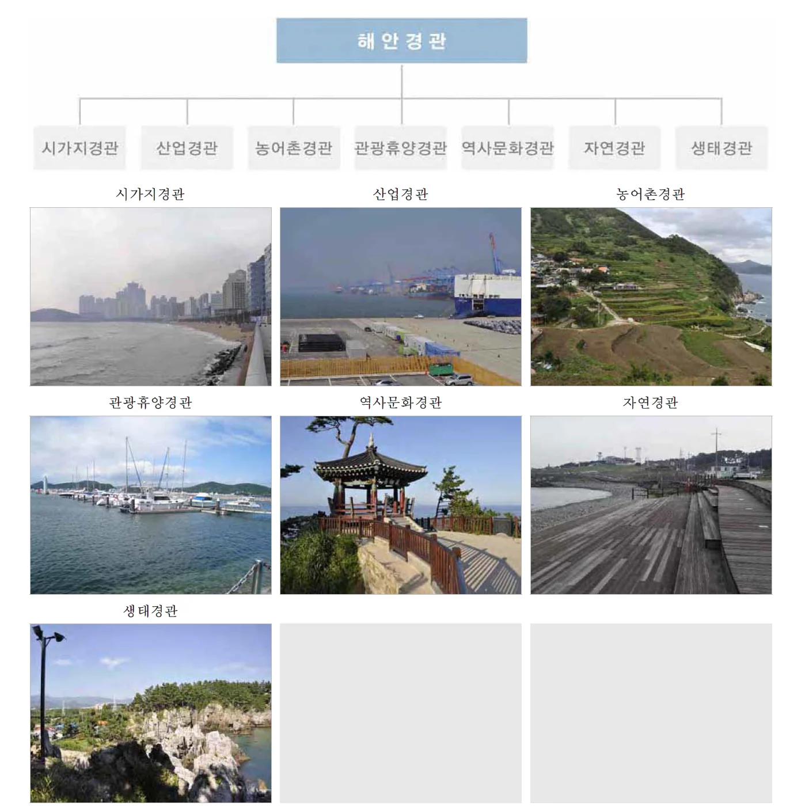
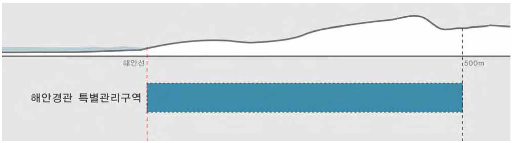

바다는 무엇을 따라야 하는가 — 연재 9회
문화 ․ 생활
바다는 무엇을 따라야 하는가?Ⅸ
문화 ․ 생활
Maritime space follows something? Ⅸ
이현성 (주)에스이공간환경디자인그룹 SEDG 공동대표 (사)한국공공디자인학회 상임이사 (armula@gmail.com)
지방 정부 또는 기관 등에 의해 작성되는 문서로서 설계 이슈에 대한 부가적 정보와 지침을 담은 안내서인 ‘디자인 가이드라인’을 통한 해안공간관리에 대해 살펴보고 있습니다. 사실 법적 수단으로 활용되지는 않지만 오히려 그렇기 때문에 다양한 디자인 권고 등을 자유롭게 제시하고 유도할 수 있는 수단으로서는 매우 효율적이라 할 수 있습니다. 다만 법적 강제력이 없기 때문에 실현성이 떨어지는 수단이라고 비판은 받습니다만 그러한 측면이 오히려 자유스러운 다양한 안을 권고 할 수 있는 장점이 되어서 디자인영역에서는 많은 부분에서 사용되고 있습니다.
본 기고를 통해서 살펴보고 있는 디자인 가이드라인 분석을 통해 해안 디자인에 참고할 수 있는 요소들을 간단하게 살펴보고 있는데 그 해안 디자인 가이드라인을 위한 주요한 사항들을 먼저 정리해본다면 다음과 같습니다.
첫째, 해안의 특성을 고려한 특수적인 가이드라인이 필요하다는 것입니다. 다양한 친수 공간을 포함하는 가이드라인이 존재하지만 해안의 개방적 경관과 자연색, 지형과 풍토 조건 등을 감안하여 하천이나 인공 친수공간에 대한 것과는 구분되는 별도의 디자인 가이드라인이 필요하다는 것입니다. 예를 들어 해안선의 변화와 염분, 습도와 같은 환경 조건은 여타의 친수공간에서 나타나지 않는 요소들입니다. 이러한 환경적이고 입지적인 특수한 조건들은 쉽게 인지할 수 없으나 장기적으로 해안 구조물의 유지 및 안전 확보에 영향을 미치기 때문에 이를 고려한 특화된 가이드라인의 성격을 지닌다는 것입니다. 염해방지를 위한 공공시설물의 소재 가이드라인이나 4계절의 경관적인 변화가 너무 명확하게 차이가 나타나는 해안의 특성을 고려한 계절별 가이드라인 등이 그 예가 되겠습니다.
둘째는 공간의 용도에 관한 명확한 가이드라인 설정이 필요합니다. 이는 해안의 자연 환경, 거주지에 대한 보호와 공공적 사용을 위한 개발 간의 충돌을 방지하기 위함인데 장소별 현황과 수요, 기회요인, 공동체의 요구에 대한 명확한 분석이 선행되어 이루어져야 한다고 생각합니다. 해양, 해안 공간이라는 곳이 광범위하고 다양한 활동과 보전이 이뤄져하는 특성을 가지고 있기 때문에 자연 사적 공간과 공적 공간, 야생 보호를 위한 구역의 설정을 가이드라인을 기반으로 명확히 함으로써 이해관계와 관련한 문제를 예방할 수 있을 것입니다. 세 번째로는 특정 해수욕장 개발과 같이 단일 면적에 대한 디자인 계획보다 주변 지역 및 거점과의 연계를 위한 통합적 디자인에 대한 중요성을 가이드라인 등을 통해 제시하여야 한다고 생각합니다. 이는 해안으로의 접근성을 향상하는 동시에 배후 지역의 경제 활성화에도 영향을 미칠 수 있기 때문에 매우 중요하며 이를 위하여 해안 도로 및 교통 인프라 구비, 사인물 설치와 같은 물리적 디자인뿐 아니라 조망 확보와 해안 산책코스 개발 등 솔루션에 관한 가이드라인이 제시될 수 있습니다.
국내 해안은 길이만 12,733km에 이르며 동서남해안마다 독특한 해안선을 이루고 있으나 활용 가치에 비하여 해안 디자인 가이드라인 개발은 미흡한 실정입니다. 가이드라인은 디자인 결과물을 제시하진 않지만 질 좋은 결과물이 다양하게 실현되기 위한 필수적 사항이기 때문에 시간이 걸리더라도 디자인 가이드라인의 수립을 통한 기초 마련의 과정은 매우 중요합니다. 본 기고 등을 통해 디자인 가이드라인의 사례를 살펴보는 의의가 거기에 있다고 볼 수 있습니다.
국내 전 해안에 적용할 수 있는 일반 디자인 가이드라인과 장소별 특성을 고려한 맞춤형 해안 디자인 가이드라인 연구 및 접근성을 향상시킬 수 있는 인프라와 관련된 지침과 기준 그리고 쾌적하고 활발한 정주공간의 형성과 자연환경의 다양성 보호 등에 관해 선진국의 사례처럼 기준 가이드라인 지침 연구가 지속되어 우리 해양, 해안 공간의 질적 향상과 품격을 이루는 토대가 마련되길 바랍니다.
1.일본 카와사키시 임해부 색채 가이드라인
| 목 차 | 주요 내용 |
| 1. 색채가이드라인에 대한 사고 | 색채 가이드라인 개념 및 의의, 목표, 적용 범위 |
| 2. 색채디자인의 흐름 | 본 가이드라인 구조 |
| 3. 본 가이드라인에서의 색 표시 방법에 대하여 | 본 가이드라인 색 표기 방법 |
| 4. 일반 칼라디자인 지구 | 일반 칼라디자인 지구에 대한 색채디자인 가이드, 적용 일러스트 예시 |
| 5. 중점 칼라디자인 지구 | 중점 칼라디자인 지구에 대한 색채디자인 가이드, 적용 일러스트 예시 |
| 6. 그래픽 디자인 거점 | 그래픽 디자인 거점에 대한 색채디자인 가이드, 적용 일러스트 예시 |
| 7. 지구의 구획에 대한 사고 | 택지규모별 사업소 시설 및 배치에 따라 적용 가능한 배색 예 |
| 8. 색채 계획의 실시 예 | 실제 진행되고 있는 사업소의 색채디자인 안 제시 |
<표 1> 일본 카와사키 시 임해부 색채 가이드라인의
구성 및 주요 내용
<자료 : 해안 디자인 가이드라인의 구성요소 및 특성 분석, 한국디자인문화학회>
카와사키시 임해부 색채 가이드라인은 카와사키시 지방 정부의 경관·마을 만들기 지원과에 의해 개발되었습니다. 이 가이드라인의 주 목적은 항만, 공업, 주택의 복합기능도시로 발전하고 있는 대상지역에 대하여 해안 주요 구조물의 색채 특성을 정리함으로써 조화롭고 활력 있는 임해부 경관을 형성하기 위한 특화된 목적을 지니고 있습니다. 대상 지역에서의 구조물이란 공장이나 항만, 교통 관련 시설물로서 비교적 규모가 크고 채색 면적이 넓어 해안의 자연색과 시각적으로 대비가 되기 쉬운 대상물을 이야기 합니다. 해안 경관을 구성하는데 있어서 인공적 요소에 대한 색채가 가장 중요한 요소라 판단하여 색채 가이드라인을 운용하게 된 것 같습니다.
본 가이드라인의 구성은 <표1>에 정리되어 있듯이 크게 8개의 카테고리로 구성되어 있습니다.
첫 번째 파트는 색채 가이드라인에 대한 사고로서 기초적이고 가이드라인에 관한 개요적인 내용을 담고 있습니다. 내용은 색채 가이드라인 개념 과 가이드라인이 왜 활용되어야 하는지와 이를 활용하는 의의 그리고 목표, 적용 범위에 관해 담고 있습니다.
두 번째 파트는 색채디자인의 흐름이라는 목차를 가지고 본 가이드라인 구조와 구성 방식에 관해 설명하고 있습니다. 가이드라인의 중요한 덕목 중 하나는 이해하기 쉬운 구성인데 이를 위해 가이드라인의 구성은 물론 읽는 방법 및 적용 방법 등을 제시하고 있습니다.
세 번째로는 본 가이드라인에서의 색 표시 방법에 대하여 라는 목차를 가지고 있는데 색채 가이드라인이다 보니 사용되고 있는 색채에 관한 표기 방법과 기준 등 주요 지표 등에 관해 설명하고 있습니다. 카와사키시 색채 가이드라인에서는 색채 결정을 위한 기준을 다음과 같이 3가지 요소로 설정하고 있습니다.
1) 자주성의 존중 : 개개 기업의 자주성을 존중, 기조색상 선택 및 지구 구분을 통하여 사업자가 자주적으로 판단·결정하도록 함
2) 자유도가 높은 색채 선택 : 사용 색 범위를 폭 넓게 설정
3) 쾌적한 색채 환경 창조 : 유사색에 의한 조화, 외형적으로 쾌적한 색채 환경을 서서히 형성
위의 기준을 살펴보았을 때 임해부 색채 가이드라인은 지구별 사용 색채 범위를 지정하되 해당 범위 안에서의 결정에 있어서는 특정색을 강요하는 것이 아니라, 범위를 지정하여 선택의 범위를 제공하는 것으로 보이는데 이는 가이드라인이 지니는 장점이라고 볼 수 있습니다.
네 번째는 일반 칼라디자인 지구라고 하여 색채 디자인 적용의 대상지와 내용에 관해 담고 있습니다. 일반 칼라디자인 지구에 대한 색채디자인 가이드와 이를 이해시키기 위해 적용된 경관을 일러스트를 통해 예시로 보여주고 있습니다.
다섯 번째 5장에서는 중점 칼라디자인 지구 항목으로서 중점 칼라디자인 지구에 대한 색채디자인 가이드와 적용 일러스트 예시를 담고 있습니다. 앞서 얘기했듯이 특정색을 지정하는 것이 아닌 색채의 범위를 지정함으로서 자유롭지만 통합된 경관 형성을 만드는 지침을 제시하고 있습니다.
여섯 번째 6장은 그래픽 디자인 거점이라는 목차인데 경관적으로 주요한 그래픽 디자인 거점에 대한 색채디자인 가이드와 적용 일러스트 예시를 담고 있습니다. 4, 5, 6장에서는 대상지를 다음의 3개 지구로 구분, 지구별 색채 표현의 레벨에 따라 색채 범위를 제시하는데 내용은 아래와 같습니다.
1) 일반 칼라디자인 지구 : 차분한 색채 경관을 위해 색상 조화형 범위 선정, 저채도 위주
2) 중점 칼라디자인 지구 : 조화 속 활력 있는 경관을 위해 색채 선택폭 넓힘. 색상 조화형, 톤조화형 범위 선정으로 저채도와 고채도 사용가능
3) 그래픽 디자인 거점 : 지역의 랜드마크로서 개성 있는 경관을 위해 자유로운 색채와 도안 적용
일반 칼라디자인 지구는 동일한 계통의 색상 그룹내에서 건물별 색상을 선택해야 하는데 기본 색상 그룹은 빨강, 노랑, 초록, 파랑, 보라색계이며 기조색을 무채 또는 저채도 톤으로 설정함으로써 전체적으로 차분하고 자연색과 어우러지는 분위기를 연출할 수 있습니다. 중점 칼라디자인 지구는 일반 지구에 비하여 다채로운 색채 경관을 형성할 수 있도록 색상조화와 톤 조화형의 배색을 동시에 수용하고 있어서 한 공장 내의 건물일지라도 일부 군은 동일 색상계통으로 배색하고 한 두 개의 건물은 다른 색상계통에서 톤만을 조절하여 적용할 수 있습니다. 그래픽 디자인 거점은 지구단위라기보다 각 사업소 중 중요한 건물이나 외부에서 잘 보이는 위치에 있는 건물 등, 랜드마크 역할을 하는 건물에 대한 배색 가이드입니다. 방법적으로는 중점 지구와 마찬가지로 색상 조화형과 톤 조화형을 동시에 적용할 수 있으나 랜드마크 건물에는 이와 별도로 고채도 색을 사용하거나 특정 테마를 가진 도 안을 삽입할 수 있도록 한 것이 주요한 특징 중 하나입니다.
7장은 지구의 구획에 대한 사고로서 택지규모별 사업소 시설 및 배치에 따라 적용 가능한 배색의 예를 보여주고 있습니다. 지구의 구획에 대한 사고 파트에서 각각의 지구 내에서도 건물군 별로 색상조화, 톤 조화형 배색이 어떻게 적용될 수 있는지 안내하고 있습니다. 이때 사업단지의 전면에 위치하거나 원통형과 같이 특이 구조의 건물에는 주로 다양한 색상을 적용하도록 권장하고 있는데, 획일화를 방지하고 일정 범위 안에서 다양성을 갖출 수 있도록 하기 위함으로 보여집니다.
여덟 번째는 색채 계획의 실시 예로서 실제 진행되고 있는 사업소의 색채디자인 안을 제시하여 구체적인 이미지가 적용될 수 있도록 도움을 주고 있습니다. 색채 계획의 실시 예 파트에서 실제 실행되고 있는 한 사업소의 색채 디자인 계획 및 도장 후 모습을 이미지로 제공하여 색채 가이드라인 적용에 대한 신뢰와 기대를 높이고 있습니다. 마지막으로 추가부분에는 국내외 다양한 색채 디자인의 사례를 담아 사용자들에게 색채디자인에 대한 전문적 관점을 가질 수 있도록 함과 동시에 풍부한 우수 사례 속에 응용하고 참고 자료로서 활용 될 수 있도록 하였습니다.
<그림 1> 중점 칼라디자인의 가이드라인 구성

<자료 : 해안 디자인 가이드라인의 구성요소 및 특성 분석, 한국디자인문화학회>가이드라인의 구체적 내용을 살펴보면 위 <그림1>에서 ①번 영역은 지구 구분 영역으로 위 사례에서는 ‘중점 칼라디자인 지구’가 되겠습니다.② 번 영역은 색상조화형 색채 적용 범위이며 ③ 번 부분은 톤 조화형 색채 적용 범위가 제시된 가이드라인입니다.
<그림 2> 중점 칼라디자인의 가이드라인 구성

<자료 : 해안 디자인 가이드라인의 구성요소 및 특성 분석, 한국디자인문화학회>위 그림의 ④번 영역은 중점 칼라디자인 지구의 색상조화형 배색 예시이며 ⑤번 영역은 중점 칼라디자인 지구의 톤 조화형 배색 예시가 제시된 가이드라인입니다.
2.국토해양부 동서남해안 경관관리 가이드라인
우리나라의 국토해양부에서도 해안 관리를 위한 가이드라인을 마련하고 있습니다. 동서남해안 및 내륙권발전기획단에서 추진한 내용으로 전체 6개 장으로 구성되어 있고 가이드라인과 가이드라인 해설서로 이루어져 있습니다. 제1장의 목적에서는 해안권에서의 개발사업이 주변의 해안경관과 어우러져 친환경적으로 시행될 수 있도록 필요한 사항을 정하여 해안경관의 보전 및 조성에 기여하는 것을 주 목표로 설정하였는데 해안경관 관리 가이드라인의 주 목적이 난개발과 환경훼손 등을 방지하기 위한 것임을 보여주고 있습니다. 또한 동서남해안권에서의 개발사업이 주변경관과 조화롭게 추진되도록 유도하기 위함과 동시에 동서남해안의 독특한 특색과 해안경관과 조화롭게 어우러진 친환경 개발로 추진하기 위함이기도 합니다.
우리나라 해안 가이드라인의 시초이기도 한 본 가이드라인은 외국의 사례들과 비교해 봤을 때 몇가지 다른 특징들이 있는데 그 중 하나는 가이드라인 지침의 내용이 개발대상지의 해안선으로부터의 거리, 해안권, 경관유형 및 경관등급 등에 따라 차등 적용된다는 것입니다. 하나의 지침이 일관되게 적용되는 것이 아닌 입지 조건과 주변 상황에 맞게 차별적으로 적용되도록 하는 것입니다. 이는 다양한 해안경관의 특성에 비추어 봤을 때 매우 적절한 전략이라고 볼 수 있습니다.
본 가이드라인의 내용을 기초로 가이드라인이 지향하는 것은 다음과 같습니다.
1) 해안권에서의 개발사업이 주변의 해안경관과 어우러져 친환경적으로 시행될 수 있도록 필요한 사항을 정하여 해안경관의 보전 및 조성에 기여함을 목적으로 함
2) 해안선과 자연 상태의 해안경관은 그대로 보호하는 것을 원칙으로 하고, 개발 시에는 송림, 녹지대 등의 완충공간을 보전하고, 개발로 인하여 훼손된 지역은 개선하여 친환경성을 확보하도록 함
3) 해안공간은 공공이용을 증진하고 접근성을 향상하도록 하며, 해안으로 접근 할 수 있는 보행중심의 동선을 조성하여 공공성을 확보하도록 함
4) 해안지역의 독창적인 경관요소를 보전·관리하며, 지역친화적인 재료를 사용하고 통일성 있는 경관을 연출하여 지역적 특색을 살리도록 함
5) 해안의 개방성을 높이고 해안의 공공이용성을 높이고 시각적 질을 향상하여 지역의 특색을 살린 해안경관을 창출하도록 함
<그림 3> 가이드라인에서 제시한 해안권 범위

<자료 : 해안 경관 관리 가이드라인 해설서 , 국토해양부>
제6장의 경관유형에 따른 등급별 가이드라인이라는 항목에서는 우리나라 해안경관의 유형을 시가지경관, 산업경관, 농어촌경관, 관광휴양경관, 역사문화경관, 자연경관, 생태경관 등 7개 유형으로 구분하고 있습니다.
<그림 4> 해안경관의 유형

<자료 : 해안 경관 관리 가이드라인 해설서, 국토해양부>7개 유형중 시가지 경관은 주거, 상업, 업무시설 등이 밀집한 도시지역이며 산업 경관유형은 공업, 물류 등의 산업시설이 밀집한 지역을 대상으로 하고 있습니다. 농어촌 경관유형은 어업, 농업 등의 생산 활동이 이루어지며 개발밀도가 낮은 지역이며 관광 휴양 경관은 여가, 휴식을 위하여 우수한 자연경관 자원을 활용한 레크레이션, 전망공간, 편익시설 등이 밀집된 지역을 지정하고 있습니다. 역사 문화 경관 유형은 국가지정문화재, 시도지정문화재 등을 보호하기 위해 관리가 필요한 지역이고 자연 경관 유형은 자연자원이 풍부하고, 여가 휴식공간으로 조성이 가능한 지역이고, 생태 경관유형은 생태자원이 풍부하여 자연 그대로의 모습으로 보존이 필요한 지역을 대상으로 지정하고 있는데 우리나라 해안의 경관 유형을 분류하고 체계화하는 것도 가이드라인을 통해서 제시될 수 있는 내용입니다.
또한 해안선으로부터 500m 내외의 구역은 해안경관 형성에 매우 중요한 지역인 ‘해안경관 특별 관리구역’으로 설정하고, 이 구역에서는 해안경관을 해안선으로부터의 거리에 따라 차별적으로 관리하기 위해 해안선으로부터 거리별 가이드라인을 적용하는 지침을 수립해 놓았습니다.
<그림 5> 해안경관 특별 관리 구역

<자료 : 해안 경관 관리 가이드라인 해설서 , 국토해양부>
감수 : 안 익 성 (isahn@hangdoeng.co.kr)
[참고문헌]
이현성외, ｢해안 디자인 가이드라인의 구성요소 및 특성 분석｣, 한국디자인문화학회지 ,Vol.18, No.4, 2013.
국토해양부, ｢해안경관관리 가이드라인 해설서｣, 2011
2018년 신년호
1
항 만
2
기록기반 추가 복구 텍스트 — 위치 대조 필요
Section0/paragraph-0013/record-7032
바다는 무엇을 따라야 하는가? IX
이 글의 판본과 수록 정보 ＋
이현성 명의가 확인된 판본 있음; 최종 집필 범위 확인 필요
연재 회차별로 분리. 같은 회차의 감수·수정본만 연결.
- 수록 자료
- 문화-바다는(9) (감수완료-안익성)저자수정요청.hwp
- 자료의 날짜 단서
- 기록 없음 · 실제 발표일과 다를 수 있습니다.
- 관련 파일
- 2개 / 서로 다른 본문 2종